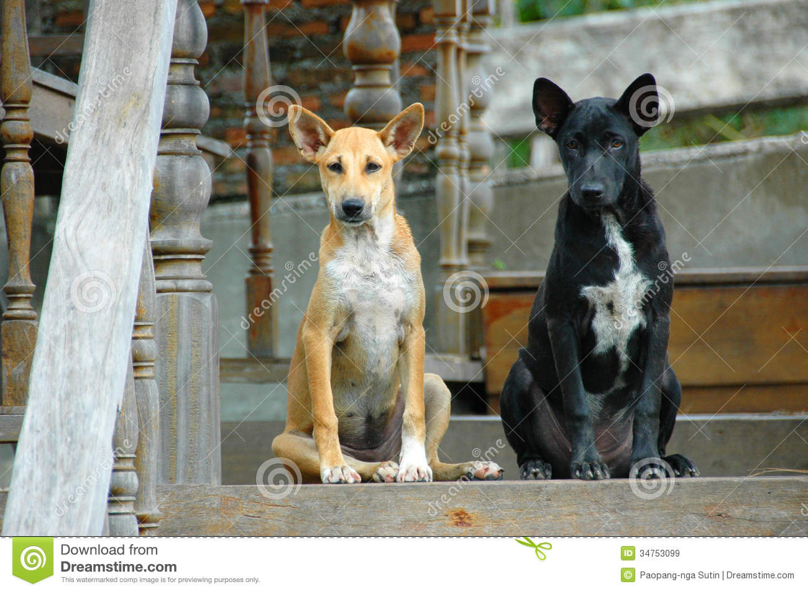
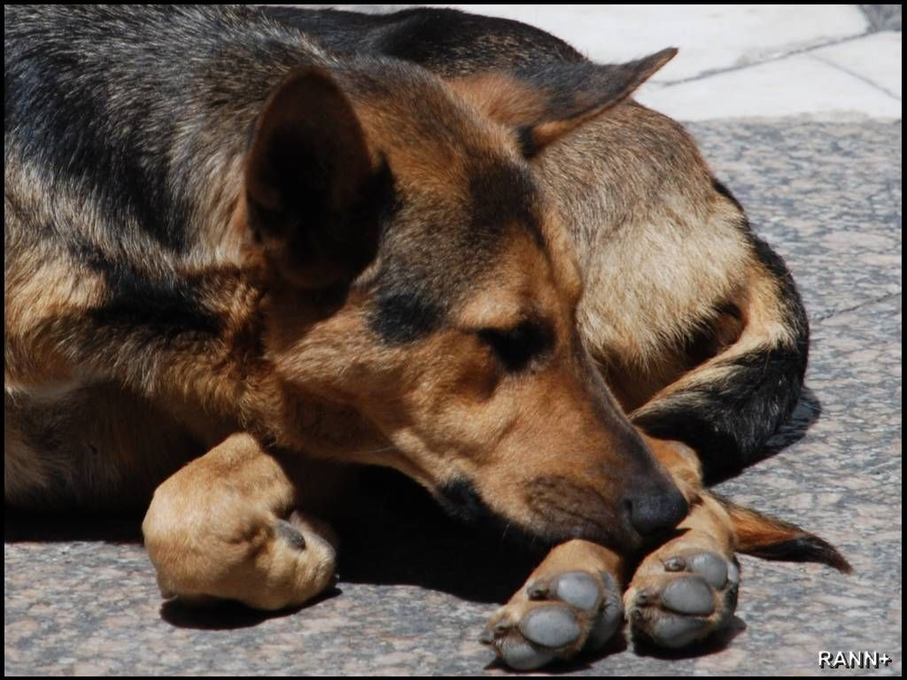

Caninos de corazón


Casa de Reposo
Sin hogar o alguien que los proteja, los perros callejeros son susceptibles a todo tipo de problemas y enfermedades. Son millones los perros que deben vagabundear las calles en busca de un espacio donde no pasar frío o donde encontrar algo de comida. La mayoría de estos perros terminan en las calles como resultado de un abandono por parte de su dueño, otros solo conocen las calles como modo de vida. Lo cierto es que todos podemos hacer algo para mejorar la situación actual de estos perros.